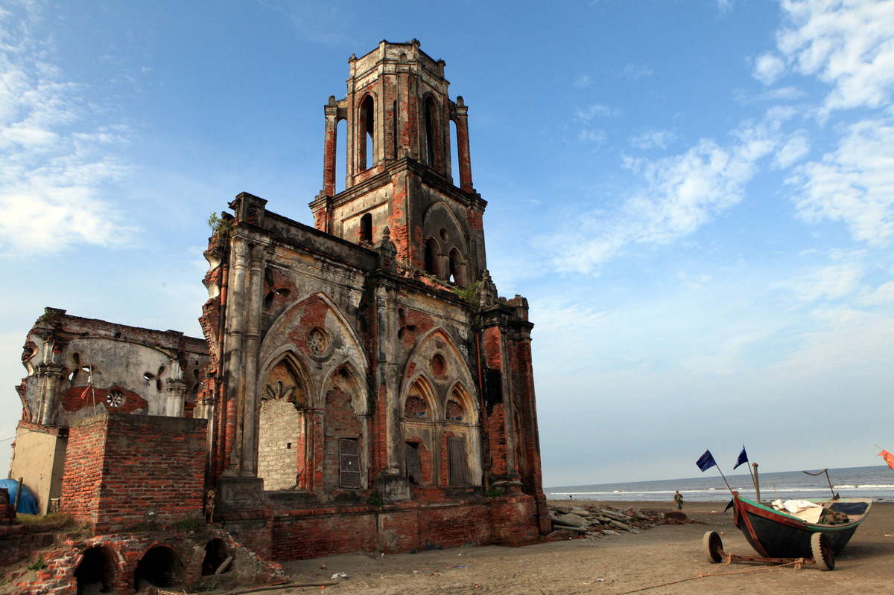
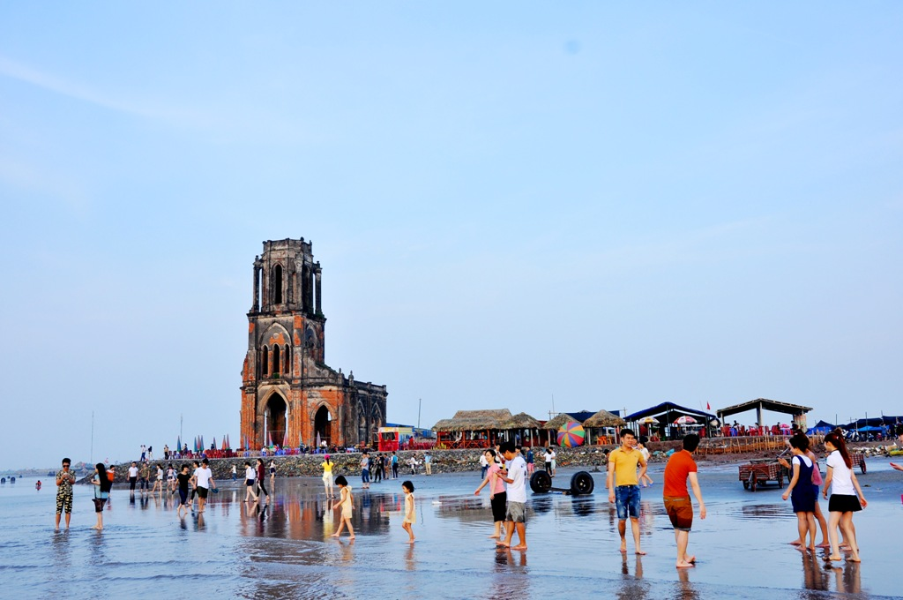
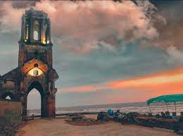
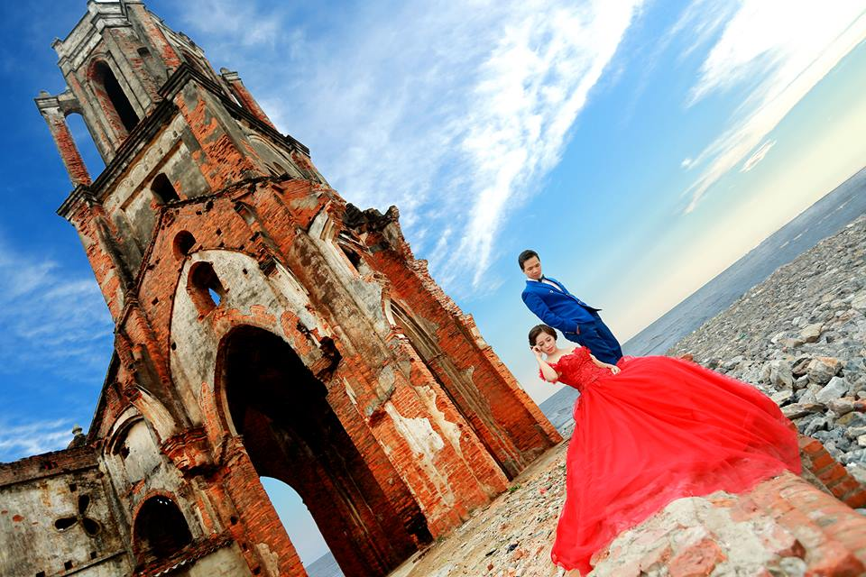

Tháp Phổ Minh (Chùa Tháp / Chùa Phổ Minh)
Nếu bạn là một người yêu biển, yêu kiến trúc chắc hẳn sẽ không thể không mê mẩn khi đến với Nam Định. Nơi mà bạn sẽ bắt gặp vô số các công trình kiến trúc đẹp, nhất là các nhà thờ mang đậm kiến trúc Gothic với những mái vòm nhọn đặc trưng. Ai cũng sẽ phải thốt lên rằng sao lại có thể có nhiều nhà thờ đẹp đến thế. Nếu ai đó đã một lần đặt chân đến nơi đây, tìm hiểu về mảnh đất này chắc hẳn sẽ lưu luyến mãi không muốn rời. Đó chính là Nhà thờ Đổ Nam Định hay còn gọi là nhà thờ Trái tim, là một trong những điểm du lịch đang gây sốt với chúng ta hiện nay. Bởi vẻ đẹp cô đơn và sự đổ nát giữa thiên nhiên thanh bình ấy đã thu hút rất nhiều du khách đến với nơi này.
Tại sao lại gọi là Nhà Thờ Đổ
5 / 5 ( 32 bình chọn ) Nếu bạn là một người yêu biển, yêu kiến trúc chắc hẳn sẽ không thể không mê mẩn khi đến với Nam Định. Nơi mà bạn sẽ bắt gặp vô số các công trình kiến trúc đẹp, nhất là các nhà thờ mang đậm kiến trúc Gothic với những mái vòm nhọn đặc trưng. Ai cũng sẽ phải thốt lên rằng sao lại có thể có nhiều nhà thờ đẹp đến thế. Nếu ai đó đã một lần đặt chân đến nơi đây, tìm hiểu về mảnh đất này chắc hẳn sẽ lưu luyến mãi không muốn rời. Đó chính là Nhà thờ Đổ Nam Định hay còn gọi là nhà thờ Trái tim, là một trong những điểm du lịch đang gây sốt với chúng ta hiện nay. Bởi vẻ đẹp cô đơn và sự đổ nát giữa thiên nhiên thanh bình ấy đã thu hút rất nhiều du khách đến với nơi này. nhà thờ đổ nam định Nội dung [hide] 1 Tại sao lại gọi là nhà thờ đổ 2 Kinh nghiệm phượt nhà thờ đổ nam định TẠI SAO LẠI GỌI LÀ NHÀ THỜ ĐỔ Chính vì vậy mà trên một số diễn đàn hiện nay xuất hiện hàng loạt các câu hỏi liên quan đến nhà thờ đổ Nam Định như: nhà thờ đổ nam định ở đâu?, nhà thờ đổ nam định cách hà nội bao lâu? Trước những câu hỏi này, hôm nay chúng tôi sẽ cung cấp cho các bạn một số thông tin về nhà thờ nam định như sau: Có thể nói rằng Nam Định được coi là thủ phủ của nhà thờ miền Bắc, tại đây có rất nhiều nhà thờ đẹp.Thế nhưng điểm thu hút giới trẻ nhất lại chính là một nhà thờ cổ nay chỉ còn lại phế tích ở bãi biển Xương Điền, xã Hải Lý, thuộc huyện Hải Hậu. Công trình này cách thành phố Nam Định khoảng 40km, cách Hà Nội khoảng 150 km, rất thuận lợi cho những chuyến đi chơi trong ngày hoặc những ngày nghỉ lễ ngắn.
Trước đây, ngay bên bờ biển Xương Điền là một quần thể gồm nhiều nhà thời lớn nhỏ. Đến 1996, nước biển xâm thực vào đất liền hơn 1km khiến những ngôi làng mọc xung quanh bãi biến biến mất. Theo đó quần thể nhà thờ cũng bị thiên nhiên phá hủy rất may nhà thờ Trái tim vẫn còn đó nhưng không còn nguyên vẹn. Từ đó, nhà thờ Trái tim bị bỏ hoang và sau này người ta gọi nhà thờ với một tên gọi mới là nhà thờ Đổ Nam Định.
Kiến Trúc
Kiến trúc của nhà thờ này vốn được thiết kế rất công phu, đẹp mắt và bền vững với những cửa vòm mềm mại, những trụ cột cao đỡ lấy toàn bộ kiến trúc. Ngoài ra, trên từng bức tường đều được khắc họa chi tiết những đường nét hoa văn thể hiện tôn giáo cũng như mong muốn về cuộc sống tươi đẹp hơn. Tuy nhiên, sóng, gió của biển đã và đang phá hủy, bào mòn công trình này. Các họa tiết, kiến trúc bên trong nhà thờ cũng bị phai mòn. Gạch xây đã bị lộ rõ sau thời gian bị vỡ vữa. Các bức tường của nhà thờ đã bị vỡ nát vùi sâu dưới cát biển. Cây cỏ, rêu phong mọc đầy trên những bức tường của nhà thờ, trước sự bao quanh của biển. Hằng ngày, người dân nơi đây vẫn quăng chài kéo lưới và lấy nhà thờ Đổ Nam Định làm nơi nghỉ chân những lúc giải lao. Trải qua bao năm tháng, nhà thờ Đổ vẫn đứng đó trơ trọi với thiên nhiên chứng kiến những hoạt động ra khơi của người dân nơi đây. Nhà thờ Đổ đã trở thành một chứng tích lịch sử chứng minh sức sống mạnh mẽ, trường tồn với thời gian trước phong ba bão táp.
Kinh nghiệm cần biết khi đi phượt Nhà Thờ Đổ
Nếu đi ô tô khách: đón xe ở bến Giáp Bát, đi chuyến Hà Nội – Nam Định – thị trấn Cồn (hoặc Thịnh Long). Xuống xe, bắt xe ôm vào khu Nhà thờ đổ (3 km). Nếu bạn đi xe máy xuất phát từ Hà Nội, theo tuyến đường cao tốc Pháp Vân – Cầu Giẽ để đến Nam Định, từ thành phố Nam Định – Nam Trực – Cổ Lễ (Trực Ninh) – Xuân Trường – Yên Định (Hải Hậu) – Cồn (Hải Hậu) – Nhà thờ đổ (Hải Lý – Hải Hậu) . Nhà thờ đổ tại thôn Xương Điền, xã Hải Lý. Đến ngã tư thị trấn Cồn có biển chỉ đường xuống Hải Lý, bạn có thể đi theo đường Đê ven biển (Đê bê tông bằng phẳng rộng khoảng 3m, bạn có thể mở kính ô tô và thưởng thức sóng và gió biển ). Nhà thờ Đổ Nam Định còn là một điểm đến hấp dẫn cho du khách và các bạn trẻ ngày nay. Là một nơi lý tưởng để có thể tiến hành những chuyến phượt trong ngày cùng bạn bè hay là nơi mà các tay săn ảnh có thể săn được những bức ảnh độc đáo. Hiện nay, nhà thờ Đổ còn là địa điểm lý tưởng để các cặp đôi chụp ảnh cưới, lưu lại khoảnh khắc hạnh phúc trong cuộc đời trước sự chứng kiến của thiên nhiên phong phú.
Thời gian chụp ảnh đẹp ở nhà thờ Đổ là lúc bình minh 5h sáng và lúc hoàng hôn vào 6h chiều. Bình minh cũng là thời gian mà ngư dân chuẩn bị ra khơi và hoàng hôn là lúc ngư dân kết thúc một ngày làm việc mệt nhọc, lúc này thiên nhiên và con người nơi đây tạo nên một bức tranh tuyệt đẹp làm siêu lòng người. Đến với nhà thờ Đổ ngoài việc chiêm ngưỡng cảnh sắc nơi đây, bạn còn được tiếp xúc với những con người thân thiện, được ăn những món hải sản tươi ngon điển hình như: tôm, cua, ghẹ, cá khoai, mực…Bạn có thể mua hải sản ngay tại bãi biển và nhờ người nấu sau đó có thể thưởng thức ngay tại bãi cát. Chiều đến, là lúc người dân tận hưởng không khí mát mẻ, trong lành. Ngoài nhà thờ Đổ và làng chài bạn có thể đến cánh đồng muối cách đó 1km để tham quan, chụp ảnh. Ngoài việc đến tham quan nhà thờ đổ bạn có thể đến tắm biển tại bãi biển Thịnh Long ( Hải Thịnh – Hải Hậu ). Bạn cũng có thể lái xe đến tham quan rất nhiều những ngôi thánh đường cổ kính khác điển hình là Vương cung thánh đường Phú Nhai cách nhà thờ đổ khoảng 20km (đây là Thánh đường được mệnh danh lớn nhất Đông Dương).